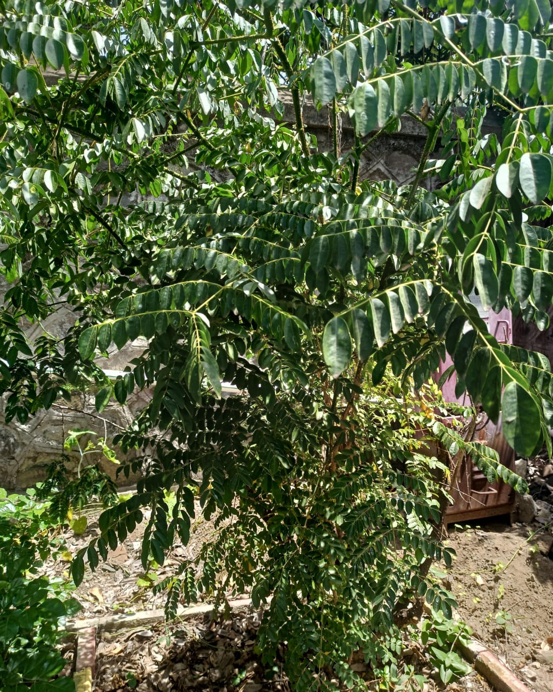

Botanical Name: Caesalpinia bonducella (L.) fleming
Common Name: Gajga
Family: Fabaceae
It is a thorny scrambling shrub belonging to the legume family. The plant produces prickly pods containing hard, smooth, marble-like seeds that are typically greyish-green or yellow.